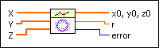
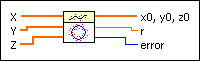
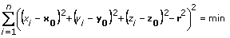

Fitting on a Sphere VI
Owning Palette: Fitting VIs
Requires: Full Development System
Determines the best spherical fit on a cloud of points in 3D.

 Add to the block diagram Add to the block diagram |
 Find on the palette Find on the palette |
Owning Palette: Fitting VIs
Requires: Full Development System
Determines the best spherical fit on a cloud of points in 3D.

| Add to the block diagram |
Find on the palette |
 |
X is the x coordinates of the points of the cloud. |
|
Y is the y coordinates of the points of the cloud. |
|
Z is the z coordinates of the points of the cloud. |
 |
x0, y0, z0 are the calculated midpoints of the given cloud. |
 |
r is the calculated radius of the given cloud. |
 |
error returns any error or warning condition from the VI. Most error situations result from discrepancies between the sizes of X, Y, and Z. You can wire error to the Error Cluster From Error Code VI to convert the error code or warning into an error cluster. |
The min-functional is based on an uncommon idea: find x0, y0, z0, and r with

This leads to a simple linear equation in x0, y0, z0 where (xi, yi, zi) are the given points, (x0, y0, z0) is the unknown midpoint, and r is the unknown radius.
Refer to the Sphere Fit VI in the labview\examples\Mathematics\Fitting directory for an example of using the Fitting on a Sphere VI.
 Open example Find related examples
Open example Find related examples